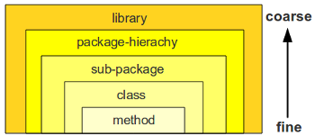

A appropriate modularization of your codebase is important. It has positive side-effects in many directions (testability, code comprehensability, build-speed etc.). Still there are different levels of modularization. These levels can be categorized from fine-grained to coarse grained.
Note: For simplicty throughout the post I will use java terms (class, method, package). Of course this can be mapped to other languages constructs like functions, file-includes or plain-script statements.

Advantage of more fine grained modularization:
- Maintaining less artifacts (e.g. files, packages, libraries) makes the build/deployment-lifecyle easier.
- For simple features code browsing gets easier (“You see all stuff with one eye-sight”)
The drawback is that the fine grained approach doesn’t scale: The bigger the codebase gets the more difficult it is to “see” any modularization or separatation of concerns. The coarse grained modularization gives you advantage here:
- Bigger systems are easier to comprehend if the “split” is done on package or library level.
- Refactorings are getting easier because inside the modules the direct numbers of dependencies get less (submodules only import dependencies they need).
- Unit-test setup gets easier (for reason see Refactoring)
Where to start?
The question is at which modularization level you should start. There are two major antipatterns, either developers sticked on too fine level (e.g. 6000 LOC inside one single file) or they started on a too coarse level (e.g. each of the many packages only contains one or two classes). The too coarse pattern often occurs if you overengineer solution.
Code from scratch
To avoid the too fine/coarse pitfall I follow the Inside-Out modularization approach:
- Start to edit a single file. Implement the highest priority requirements of feature inside the most fine grained “module” your language can you offer (e.g. class-method).
- When code inside a method gets bigger and you lose overview try to cluster statements (e.g. by speparating them with line-breaks).
- When code statement clusters get too many and you see duplications, extract these section to a new method.
- When there are too many methods and the lines of code inside the single file are very high, cluster your methods by problem domain and extract them to a new class in the same package.
- When there are too many classes inside on package, either create a subpackage or sibling-package which fit to the problem domain (separation of concerns).
- When a package hierachy/tree gets too deep and wide, create a new package hierachy (e.g. com.foo becomes com.foo.system1 and com.foo.system2)
- When there are too many package hierachies inside one library (like .jar), create another library-project (e.g. Maven project/module).
Integrate changes in existing code
Above is a more or less complete list when starting with code from scratch. But how does it apply to existing code and integrating changes? The main principle is the same but you would start your Inside-Out modularization on a different level. As Example: If you have to add code inside a class and see it you feature-adding would result in too many methods you start off with step number four (extracting class).
At which step to level up?
It is always the question, when to level up from a fine to a more coarse grained modularization. It is very difficult to have a thumb of a rule, because this highly matters on code-style taste, on density of ‘if/else’ logic and also on the problem-domain you are trying to solve. A very good test is either ask colleagues for review whether the modularization is intuitive or take another look the next day or a week after to get a fresh view.

0 responses
You must log in to post a comment.